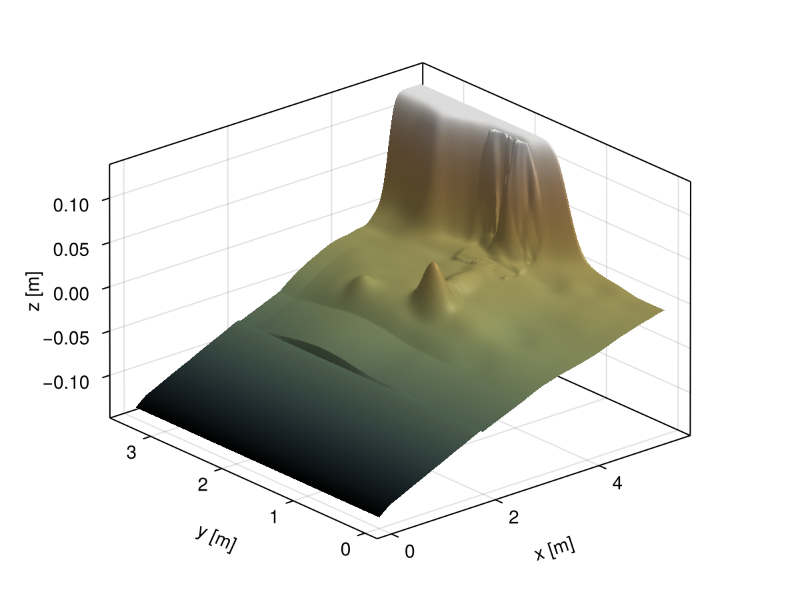

Okushiri Tsunami
In this tutorial, we will use the shallow water equations with wetting and drying on an unstructured quadrilateral mesh to numerically approximate the Okushiri tsunami experiment that models the wave runup near the village of Monai on Okushiri Island. This benchmark problem comes from a 1/400 scale laboratory experiment that used a wave tank at the Central Research Institute for Electric Power Industry (CRIEPI) in Abiko, Japan.
This is an application that exercises the ability of TrixiShallowWater.jl to model tsunami runup onto a complex three-dimensional coastline. The bathymetry data for this test case is approximated with bicubic splines. A thorough description of this problem setup and the original data files are available here. Additional information about this benchmark problem and comparison results can be found in the papers:
- J. Hou, Q. Liang, H. Zhang, and R. Hinkelmann (2015) An efficient unstructured MUSCL scheme for solving the 2D shallow water equations DOI: 10.1016/j.envsoft.2014.12.007
- M. Ricchiuto (2015) An explicit residual based approach for shallow water flows DOI: 10.1016/j.jcp.2014.09.027
The tutorial will cover:
- Create an unstructured quadrilateral mesh with HOHQMesh.jl
- Set up a SWE solver for wet/dry transitions
- Approximate bathymetry data with TrixiBottomTopography.jl
- Create custom initial conditions, boundary conditions, and source terms
- Postprocess solution data with Trixi2Vtk.jl
- Visualization with ParaView
Load required packages
The core solver component is TrixiShallowWater.jl, which requires Trixi.jl for the underlying spatial discretization and OrdinaryDiffEqSSPRK.jl for time integration. HOHQMesh.jl is needed to generate an unstructured mesh for this problem. TrixiBottomTopography.jl is needed to create a bathymetry approximation that is directly usable by Trixi.jl. Finally, we include CairoMakie.jl for insitu visualization and Trixi2Vtk.jl for postprocessing.
using HOHQMeshusing OrdinaryDiffEqSSPRKusing Trixiusing TrixiShallowWaterusing TrixiBottomTopographyusing CairoMakieusing Trixi2VtkVisualize the original bathymetry
First, we obtain and plot the raw bathymetry data. An examination of the bathymetry and its features will aid in designing an appropriate mesh for the discretization. We download the raw bathymetry data to make it available locally
raw_bathymetry_file = Trixi.download("https://gist.githubusercontent.com/andrewwinters5000/305d203c0409d26075aa2993ff367637/raw/df480a6ff63da1916a19820b060abfea83d40dbf/raw_monai_bathymetry.txt", joinpath(@__DIR__, "raw_monai_bathymetry.txt"));Next, we open and parse the bathymetry data to visualize it
file = open(raw_bathymetry_file)lines = readlines(file)close(file)x = zeros(Float64, length(lines) - 1)y = zeros(Float64, length(lines) - 1)z = zeros(Float64, length(lines) - 1)# Skip the header of the filefor j in 2:length(lines) current_line = split(lines[j]) x[j - 1] = parse(Float64, current_line[1]) y[j - 1] = parse(Float64, current_line[2]) z[j - 1] = -parse(Float64, current_line[3])endsurface(x, y, z, axis = (type = Axis3, xlabel = "x [m]", ylabel = "y [m]", zlabel = "z [m]"), colormap = :greenbrownterrain)
From the bathymetry visualization we can identify that there are several regions of interest that require higher resolution to create an accurate approximation. In particular, there is a island located near the center of the domain and a cliff side that dominates the right portion of the domain.
This information is useful to guide the creation of an unstructured quadrilateral mesh. In HOHQMesh, we set a background grid and then specify targeted refinement regions to add more elements where more resolution is required to resolve the bathymetry.
Create an unstructured mesh
To begin, we create a new mesh project. The output files created by HOHQMesh will be saved into the "out" folder and carry the same name as the project, in this case "monai_shore".
monai = newProject("monai_shore", "out");Next, we set the polynomial order for the boundaries to be linear, i.e., polynomials of degree one. The file format is set to "ISM-V2" as it is compatible with UnstructuredMesh2D mesh type that will be used later in the solver.
setPolynomialOrder!(monai, 1)setMeshFileFormat!(monai, "ISM-V2");The rectangular domain for this problem has no interior or exterior boundary curves. To suppress extraneous output from HOHQMesh during the mesh generation process we create an empty MODEL dictionary.
HOHQMesh.getModelDict(monai);Now we can set a background Cartesian box mesh required to define the length scales in the mesh generation process. The domain for this problem setup is $[0.0, 5.488] \times [0.0, 3.402]$. To initialize the mesh, the domain boundary edges are provided in bounds with order [top, left, bottom, right]. The background grid is coarse with eight elements in the $x$-direction and four elements in the $y$-direction.
bounds = [3.402, 0.0, 0.0, 5.488]N = [8, 4, 0]addBackgroundGrid!(monai, bounds, N)From the inspection of the bathymetry visualization above we indicate regions in the domain to target additional refinement during mesh generation. One RefinementCenter is placed around the island near the center of the domain. Three RefinementLine areas are placed in the wake region of said island and the coastline.
island = newRefinementCenter("island", "smooth", [3.36, 1.68, 0.0], 0.1, 0.15)wake = newRefinementLine("wake", "smooth", [3.75, 1.7, 0.0], [4.75, 1.7, 0.0], 0.15, 0.2)shoreline_top = newRefinementLine("shoreline", "smooth", [4.816, 3.374, 0.0], [4.83, 2.366, 0.0], 0.15, 0.168)shoreline_bottom = newRefinementLine("shoreline", "smooth", [4.97, 2.3, 0.0], [5.32, 1.4, 0.0], 0.075, 0.22);These four refinement regions are then added into the monai mesh project.
add!(monai, island)add!(monai, wake)add!(monai, shoreline_top)add!(monai, shoreline_bottom)One can plot the current project to inspect the background grid and refinement region locations using the command
plotProject!(monai, GRID + REFINEMENTS);The locations of the refinement regions look good so that we can generate the mesh. The call to generate_mesh prints mesh also prints quality statistics and updates the visualization.
generate_mesh(monai);
*******************
2D Mesh Statistics:
*******************
Total time = 1.5139000000000000E-002
Number of nodes = 600
Number of Edges = 1173
Number of Elements = 574
Number of Subdivisions = 4
Mesh Quality:
Measure Minimum Maximum Average Acceptable Low Acceptable High Reference
Signed Area 0.00185871 0.64053016 0.03252644 0.00000000 999.99900000 1.00000000
Aspect Ratio 1.06385060 2.13278937 1.29691264 1.00000000 999.99900000 1.00000000
Condition 1.00925079 1.89817525 1.17459498 1.00000000 4.00000000 1.00000000
Edge Ratio 1.14552059 2.78677506 1.57612085 1.00000000 4.00000000 1.00000000
Jacobian 0.00149698 0.59304675 0.02682698 0.00000000 999.99900000 1.00000000
Minimum Angle 37.88262803 89.90492266 75.82673070 40.00000000 90.00000000 90.00000000
Maximum Angle 90.06447142 143.84504916 105.60605711 90.00000000 135.00000000 90.00000000
Area Sign 1.00000000 1.00000000 1.00000000 1.00000000 1.00000000 1.00000000Additionally, this will output the following files to the out folder:
monai_shore.control: A HOHQMesh control file for the current project.monai_shore.tec: A TecPlot formatted file to visualize the mesh with other software, e.g., ParaView.monai_shore.mesh: A mesh file with format "ISM-V2".
Discretize the problem setup
With the mesh in hand we can proceed to construct the solver components and callbacks for the tsunami runup problem.
For this example we solve the two-dimensional shallow water equations, so we use the ShallowWaterEquations2D and specify the gravitational acceleration to gravity = 9.81 as well as a background water height H0 = 0.0.
equations = ShallowWaterEquations2D(gravity = 9.81, H0 = 0.0)┌──────────────────────────────────────────────────────────────────────────────────────────────────┐
│ ShallowWaterEquations2D │
│ ═══════════════════════ │
│ #variables: ……………………………………………………………… 4 │
│ │ variable 1: ………………………………………………………… h │
│ │ variable 2: ………………………………………………………… h_v1 │
│ │ variable 3: ………………………………………………………… h_v2 │
│ │ variable 4: ………………………………………………………… b │
└──────────────────────────────────────────────────────────────────────────────────────────────────┘Next, we construct an approximation to the bathymetry with TrixiBottomTopography.jl using a BicubicBSpline with the "not-a-knot" boundary closure. For this we first download the bathymetry data that has been preprocessed to be in the format required by TrixiBottomTopography, see here for more information.
spline_bathymetry_file = Trixi.download("https://gist.githubusercontent.com/andrewwinters5000/21255c980c4eda5294f91e8dfe6c7e33/raw/1afb73928892774dc3a902e0c46ffd882ef03ee3/monai_bathymetry_data.txt", joinpath(@__DIR__, "monai_bathymetry_data.txt"));Create a bicubic B-spline interpolation of the bathymetry data, then create a function to evaluate the resulting spline at a given point $(x,y)$. The type of this struct is fixed as BicubicBSpline.
const bath_spline_struct = BicubicBSpline(spline_bathymetry_file, end_condition = "not-a-knot")bathymetry(x::Float64, y::Float64) = spline_interpolation(bath_spline_struct, x, y);We then create a function to supply the initial condition for the simulation.
@inline function initial_condition_monai_tsunami(x, t, equations::ShallowWaterEquations2D) # Initially water is at rest v1 = 0.0 v2 = 0.0 # Bottom topography values are computed from the bicubic spline created above x1, x2 = x b = bathymetry(x1, x2) # It is mandatory to shift the water level at dry areas to make sure the water height h # stays positive. The system would not be stable for h set to a hard zero due to division by h in # the computation of velocity, e.g., (h v) / h. Therefore, a small dry state threshold # with a default value of 5*eps() ≈ 1e-13 in double precision, is set in the constructor above # for the ShallowWaterEquations and added to the initial condition if h = 0. # This default value can be changed within the constructor call depending on the simulation setup. h = max(equations.threshold_limiter, equations.H0 - b) # Return the conservative variables return SVector(h, h * v1, h * v2, b)endinitial_condition = initial_condition_monai_tsunami;For this tsunami test case a specialized wave maker type of boundary condition is needed. It is used to model an incident wave that approaches from off-shore with a water depth of $h = 13.535\,\text{cm}$. To create the incident wave information that is valid over the time interval $t \in [0\,s, 22.5\,s]$ we use a CubicBspline to interpolate the given data from the reference data.
We download the incident wave data that has been preprocessed to be in the format required by TrixiBottomTopography.
wavemaker_bc_file = Trixi.download("https://gist.githubusercontent.com/andrewwinters5000/5b11f5f175bddb326d11d8e28398127e/raw/64980e0e4526e0fcd49589b34ee5458b9a1cebff/monai_wavemaker_bc.txt", joinpath(@__DIR__, "monai_wavemaker_bc.txt"));Similar to the bathymetry approximation, we construct a cubic B-spline interpolation of the data, then create a function to evaluate the resulting spline at a given $t$ value. The type of this struct is fixed as CubicBSpline.
const h_spline_struct = CubicBSpline(wavemaker_bc_file; end_condition = "not-a-knot")H_from_wave_maker(t::Float64) = spline_interpolation(h_spline_struct, t);Now we are equipped to define the specialized boundary condition for the incident wave maker.
@inline function boundary_condition_wave_maker(u_inner, normal_direction::AbstractVector, x, t, surface_flux_functions, equations::ShallowWaterEquations2D) # Extract the numerical flux functions to compute the conservative and nonconservative # pieces of the approximation surface_flux_function, nonconservative_flux_function = surface_flux_functions # Compute the water height from the wave maker input file data # and then clip to avoid negative water heights and division by zero h_ext = max(equations.threshold_limiter, H_from_wave_maker(t) - u_inner[4]) # Compute the incoming velocity as in Eq. (10) of the paper # - S. Vater, N. Beisiegel, and J. Behrens (2019) # A limiter-based well-balanced discontinuous Galerkin method for shallow-water flows # with wetting and drying: Triangular grids # [DOI: 10.1002/fld.4762](https://doi.org/10.1002/fld.4762) h0 = 0.13535 # reference incident water height converted to meters v1_ext = 2 * (sqrt(equations.gravity * h_ext) - sqrt(equations.gravity * h0)) # Create the external solution state in the conservative variables u_outer = SVector(h_ext, h_ext * v1_ext, zero(eltype(x)), u_inner[4]) # Calculate the boundary flux and nonconservative contributions flux = surface_flux_function(u_inner, u_outer, normal_direction, equations) noncons_flux = nonconservative_flux_function(u_inner, u_outer, normal_direction, equations) return flux, noncons_fluxend;We create the dictionary that assigns the different boundary conditions to physical boundary names. The names for the rectangular domain, e.g. Bottom are the default names provided by HOHQMesh. As per the problem definition, three of the domain boundaries are walls and the incident wave maker boundary condition implemented above is set at the Left domain
boundary_condition = (; Bottom = boundary_condition_slip_wall, Top = boundary_condition_slip_wall, Right = boundary_condition_slip_wall, Left = boundary_condition_wave_maker);For this application, we also need to model the bottom friction. Thus, we create a new source term, which adds a Manning friction term to the momentum equations.
@inline function source_terms_manning_friction(u, x, t, equations::ShallowWaterEquations2D) h, hv_1, hv_2, _ = u n = 0.001 # friction coefficient h = (h^2 + max(h^2, 1e-8)) / (2 * h) # desingularization procedure # Compute the common friction term Sf = -equations.gravity * n^2 * h^(-7 / 3) * sqrt(hv_1^2 + hv_2^2) return SVector(zero(eltype(x)), Sf * hv_1, Sf * hv_2, zero(eltype(x)))end;Now we construct the approximation space, where we use the discontinuous Galerkin spectral element method (DGSEM), with a volume integral in flux differencing formulation. For this we first need to specify fluxes for both volume and surface integrals. Since the system is setup in nonconservative form the fluxes need to provided in form of a tuple flux = (conservative flux, nonconservative_flux). To ensure well-balancedness and positivity a reconstruction procedure is applied for the surface fluxes and a special shock-capturing scheme is used to compute the volume integrals. For the surface_flux we specify an HLL-type solver flux_hll_chen_noelle that uses the wave speed estimate min_max_speed_chen_noelle together with the hydrostatic reconstruction procedure hydrostatic_reconstruction_chen_noelle to ensure positivity and that the approximation is well-balanced.
volume_flux = (flux_wintermeyer_etal, flux_nonconservative_wintermeyer_etal)surface_flux = (FluxHydrostaticReconstruction(flux_hll_chen_noelle, hydrostatic_reconstruction_chen_noelle), flux_nonconservative_chen_noelle)basis = LobattoLegendreBasis(7) # polynomial approximation space with degree 7indicator_sc = IndicatorHennemannGassnerShallowWater(equations, basis, alpha_max = 0.5, alpha_min = 0.001, alpha_smooth = true, variable = waterheight)volume_integral = VolumeIntegralShockCapturingHG(indicator_sc; volume_flux_dg = volume_flux, volume_flux_fv = surface_flux)solver = DGSEM(basis, surface_flux, volume_integral)┌──────────────────────────────────────────────────────────────────────────────────────────────────┐
│ DG{Float64} │
│ ═══════════ │
│ basis: …………………………………………………………………………… LobattoLegendreBasis{Float64}(polydeg=7) │
│ mortar: ………………………………………………………………………… LobattoLegendreMortarL2{Float64}(polydeg=7) │
│ surface integral: ……………………………………………… SurfaceIntegralWeakForm │
│ │ surface flux: …………………………………………………… (FluxHydrostaticReconstructio…_nonconservative_chen_noelle) │
│ volume integral: ………………………………………………… VolumeIntegralShockCapturingHGType │
│ │ volume integral DG default: ……………… VolumeIntegralFluxDifferencing │
│ │ │ volume flux: ………………………………………………… (Trixi.flux_wintermeyer_etal,…onservative_wintermeyer_etal) │
│ │ volume integral DG blend: …………………… VolumeIntegralFluxDifferencing │
│ │ │ volume flux: ………………………………………………… (Trixi.flux_wintermeyer_etal,…onservative_wintermeyer_etal) │
│ │ volume integral FV: …………………………………… VolumeIntegralPureLGLFiniteVolume │
│ │ │ FV flux: …………………………………………………………… (FluxHydrostaticReconstructio…_nonconservative_chen_noelle) │
│ │ indicator: …………………………………………………………… IndicatorHennemannGassnerShallowWater │
│ │ │ indicator variable: ……………………………… waterheight │
│ │ │ max. α: ……………………………………………………………… 0.5 │
│ │ │ min. α: ……………………………………………………………… 0.001 │
│ │ │ smooth α: ………………………………………………………… yes │
└──────────────────────────────────────────────────────────────────────────────────────────────────┘The mesh is created using the UnstructuredMesh2D type. The mesh is constructed by reading in the mesh file created by HOHQMesh and written to the directory out.
mesh_file = joinpath(@__DIR__, "out", "monai_shore.mesh")mesh = UnstructuredMesh2D(mesh_file)┌──────────────────────────────────────────────────────────────────────────────────────────────────┐
│ UnstructuredMesh2D{2, Float64, Trixi.CurvedSurface{Float64}} │
│ ════════════════════════════════════════════════════════════ │
│ mesh file: ………………………………………………………………… /home/runner/work/TrixiShallo…utorials/out/monai_shore.mesh │
│ number of elements: ………………………………………… 574 │
│ faces: …………………………………………………………………………… 1173 │
│ mesh polynomial degree: ……………………………… 1 │
└──────────────────────────────────────────────────────────────────────────────────────────────────┘The semi-discretization object combines the mesh, equations, initial condition, solver, boundary conditions, and source terms into a single object. This object represents the spatial discretization of the problem.
semi = SemidiscretizationHyperbolic(mesh, equations, initial_condition, solver; boundary_conditions = boundary_condition, source_terms = source_terms_manning_friction);The semidiscretization is complemented with the time interval over which the problem will be integrated and needed to define an ODE problem for time integration.
tspan = (0.0, 22.5)ode = semidiscretize(semi, tspan);Callbacks are used to monitor the simulation, save results, and control the time step size. Below, we define several callbacks for different purposes.
Analysis Callback
The AnalysisCallback is used to analyze the solution at regular intervals. Extra analysis quantities such as conservation errors can be added to the callback.
analysis_interval = 1000analysis_callback = AnalysisCallback(semi, interval = analysis_interval)┌──────────────────────────────────────────────────────────────────────────────────────────────────┐
│ AnalysisCallback │
│ ════════════════ │
│ interval: …………………………………………………………………… 1000 │
│ analyzer: …………………………………………………………………… LobattoLegendreAnalyzer{Float64}(polydeg=14) │
│ │ error 1: ………………………………………………………………… l2_error │
│ │ error 2: ………………………………………………………………… linf_error │
│ │ integral 1: ………………………………………………………… entropy_timederivative │
│ save analysis to file: ………………………………… no │
└──────────────────────────────────────────────────────────────────────────────────────────────────┘Save Solution Callback
The SaveSolutionCallback outputs solution data and other quantities like the shock capturing parameter to .h5 files for postprocessing
save_solution = SaveSolutionCallback(dt = 0.5, save_initial_solution = true, save_final_solution = true)┌──────────────────────────────────────────────────────────────────────────────────────────────────┐
│ SaveSolutionCallback │
│ ════════════════════ │
│ dt: …………………………………………………………………………………… 0.5 │
│ solution variables: ………………………………………… cons2prim │
│ save initial solution: ………………………………… yes │
│ save final solution: ……………………………………… yes │
│ output directory: ……………………………………………… /home/runner/work/TrixiShallo…TrixiShallowWater.jl/docs/out │
└──────────────────────────────────────────────────────────────────────────────────────────────────┘Stepsize Callback
The StepsizeCallback calculates the time step based on a CFL condition.
stepsize_callback = StepsizeCallback(cfl = 0.6)┌──────────────────────────────────────────────────────────────────────────────────────────────────┐
│ StepsizeCallback │
│ ════════════════ │
│ CFL Hyperbolic: …………………………………………………… Returns{Float64}(0.6) │
│ CFL Parabolic: ……………………………………………………… Returns{Float64}(0.0) │
│ Interval: …………………………………………………………………… 1 │
└──────────────────────────────────────────────────────────────────────────────────────────────────┘Combine Callbacks
All the defined callbacks are combined into a single CallbackSet.
callbacks = CallbackSet(analysis_callback, stepsize_callback, save_solution);Run the simulation
Finally, we solve the ODE problem using a strong stability-preserving Runge-Kutta (SSPRK) method. The PositivityPreservingLimiterShallowWater is used as a stage limiter to ensure positivity of the water height during the simulation. The SSPRK43 integrator supports adaptive timestepping; however, this is deactivated with adaptive=false as we use a CFL-based time step restriction.
stage_limiter! = PositivityPreservingLimiterShallowWater(variables = (waterheight,))sol = solve(ode, SSPRK43(; stage_limiter!); dt = 1.0, ode_default_options()..., callback = callbacks, adaptive = false);Postprocessing the solution data
It is useful to visualize and inspect the solution and bathymetry of the shallow water equations. One option available is post-processing the Trixi.jl output file(s) with the Trixi2Vtk.jl functionality and plotting them with ParaView.
To convert all the HDF5-formatted .h5 output file(s) from TrixiShallowWater.jl into VTK format execute the following
trixi2vtk("out/solution_*.h5", output_directory = "out")then it is possible to open the .pvd file with ParaView and create a video of the simulation. In addition, the trixi2vtk call will create celldata files if one wishes to plot the shock capturing parameter.
In ParaView, after opening the appropriate solution .pvd file, one can apply two instances of the Warp By Scalar filter to visualize the water height and bathymetry in three dimensions. Many additional customizations, e.g., color scaling, fonts, etc. are available in ParaView. An example of the output at the final time $22.5$ is given below.
Putting it all together
Now the problem discretization components are assembled and working together with a postprocessing pipeline. We run the simulation, which takes approximately 12 minutes with solution files in the SaveSolutionCallback written every dt = 0.04 to obtain a high temporal resolution of the solution output. We then visualize the solution, bathymetry, and shock capturing using ParaView and create a video of the tsunami runup simulation.
Source: Trixi.jl's YouTube channel Trixi Framework
This page was generated using Literate.jl.